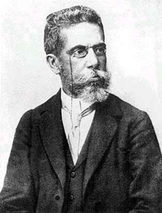

Fotógrafo desconhecido / Domínio público
Escritor
Machado de Assis
Nascimento
21 de junho de 1839
Origem
Morro do Livramento, na zona portuária do Rio de Janeiro
Biografia
Joaquim Maria Machado de Assis (1839–1908) foi um escritor, poeta, cronista e romancista brasileiro. De origem humilde, trabalhou como tipógrafo e jornalista. Foi um dos fundadores e o primeiro presidente da Academia Brasileira de Letras.
Importância e legado
Machado de Assis é considerado um dos maiores escritores da literatura brasileira. Obras como Dom Casmurro e Memórias Póstumas de Brás Cubas exploram as relações humanas e a sociedade. Sua trajetória é um marco da presença negra na literatura nacional.
Você sabia?
Antes de se tornar um escritor consagrado, Machado de Assis trabalhou como aprendiz de tipógrafo na Imprensa Nacional.